ART OF MUSIC
feel the power of music...
 Like us on facebook
Like us on facebook
"Musical training is a more potent instrument than any other, because rhythm and harmony find
their way into the inward places of the soul."
 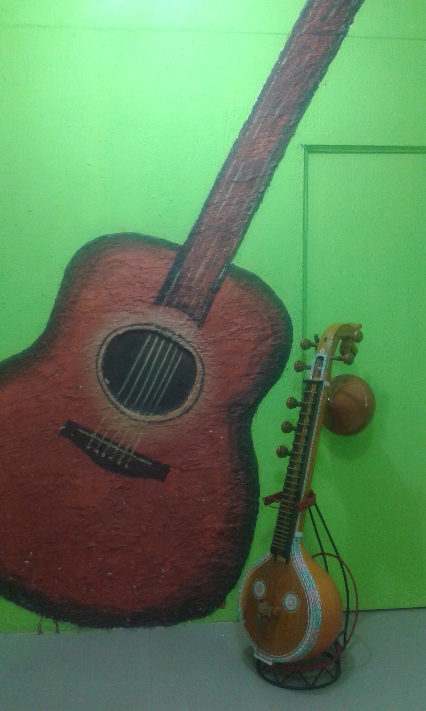
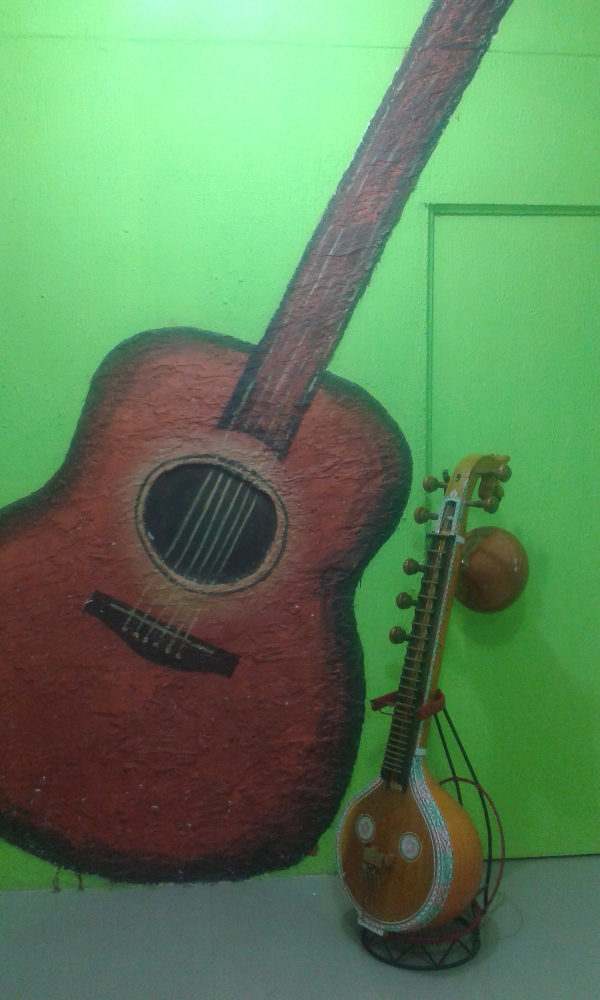

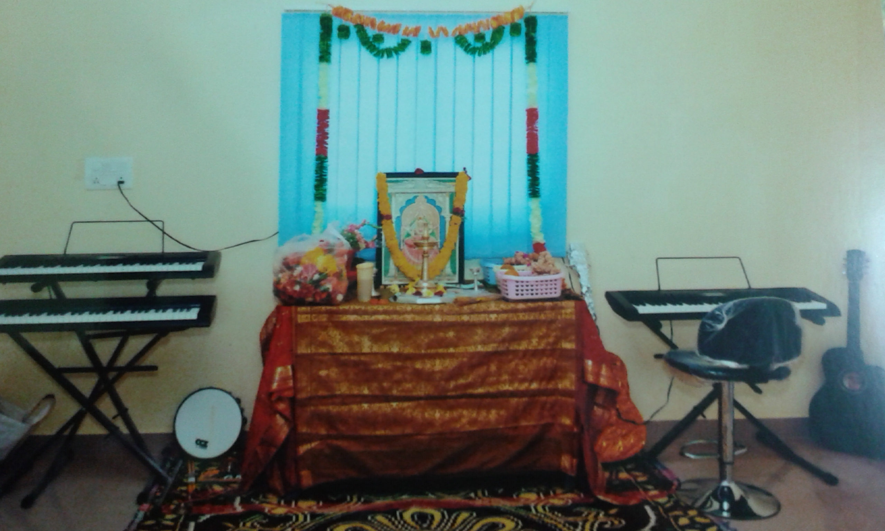


 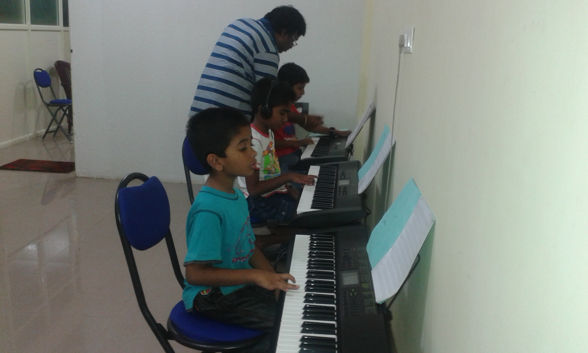
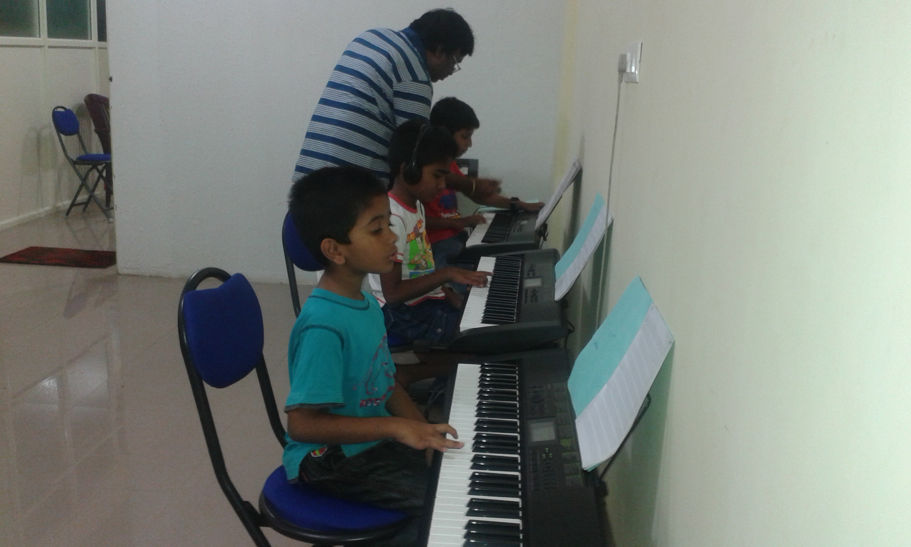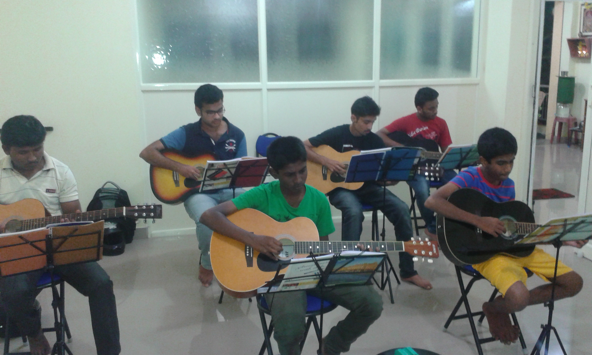
 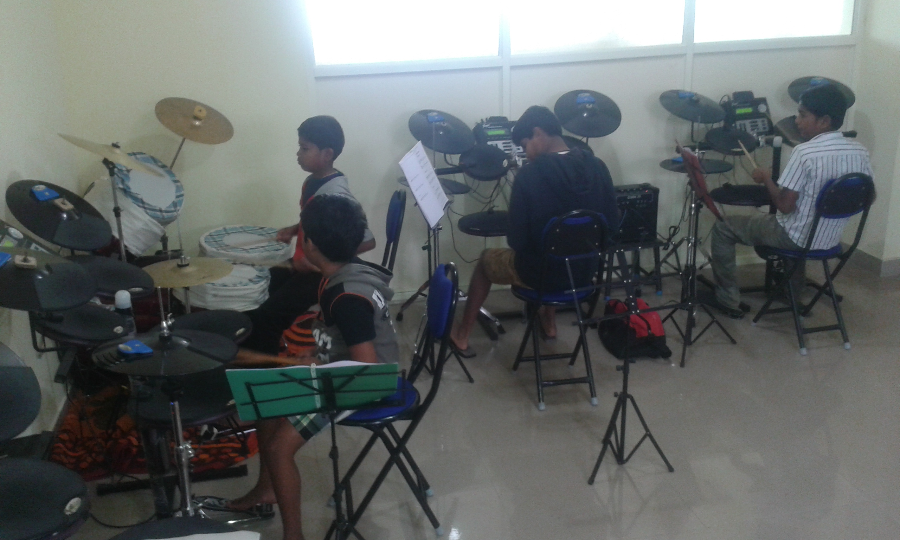
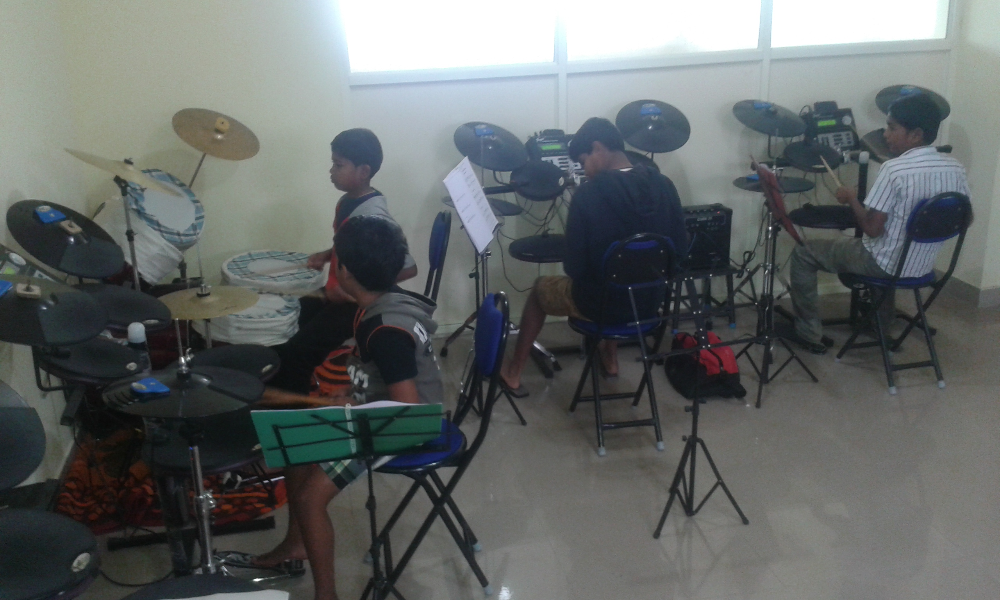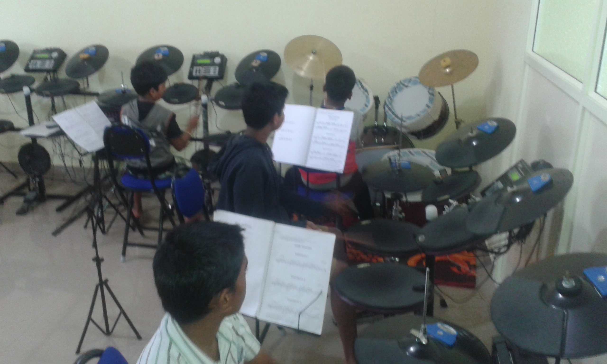


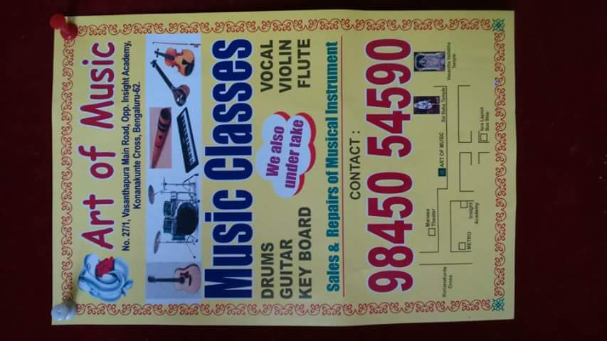
 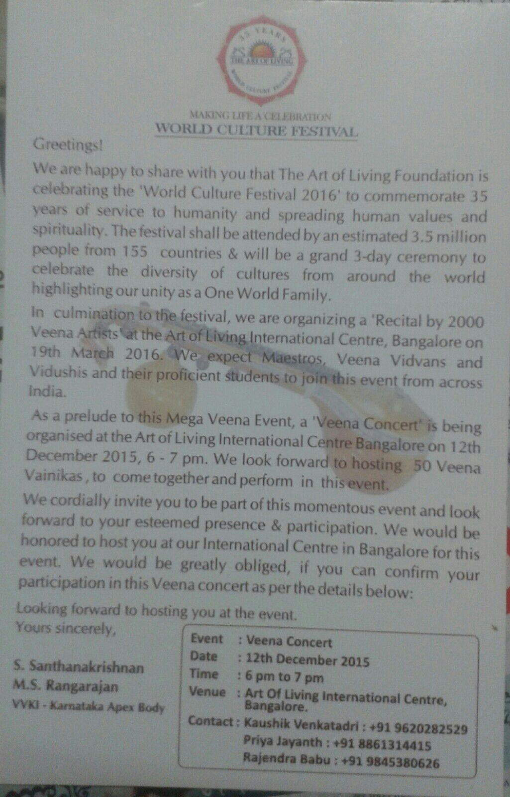
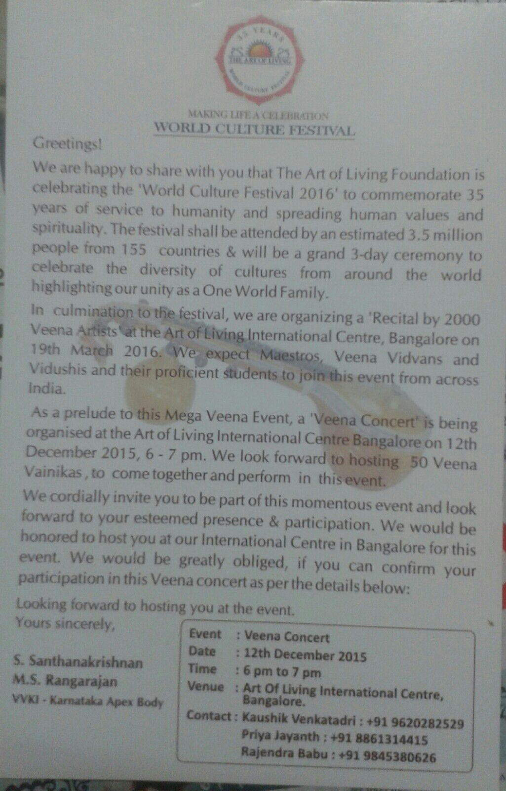
 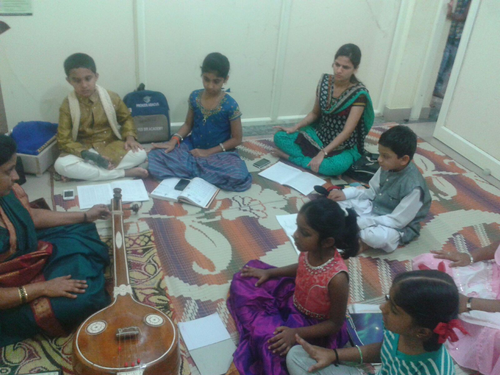
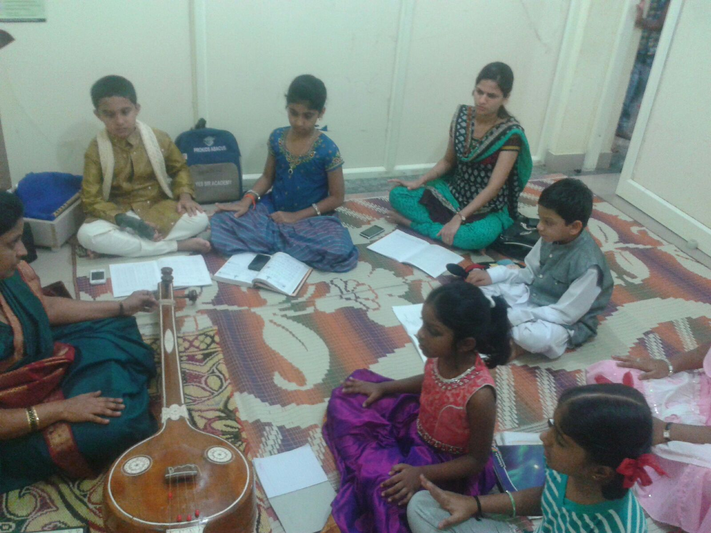 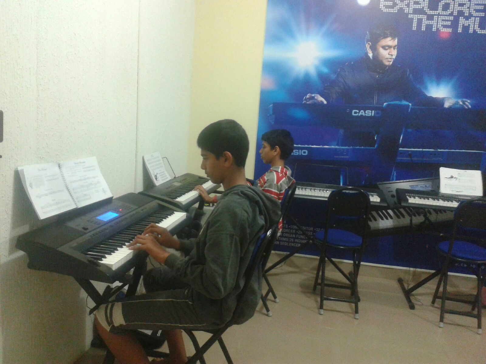
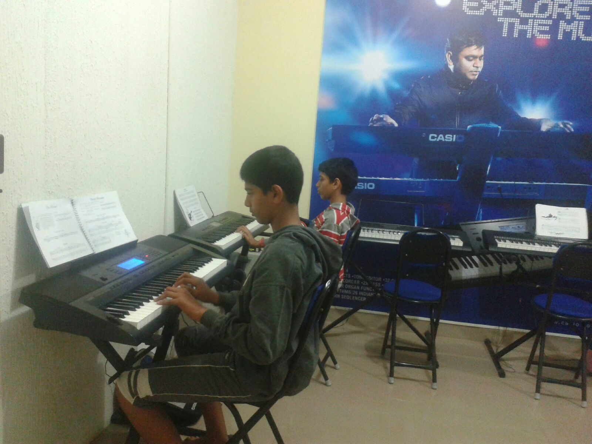